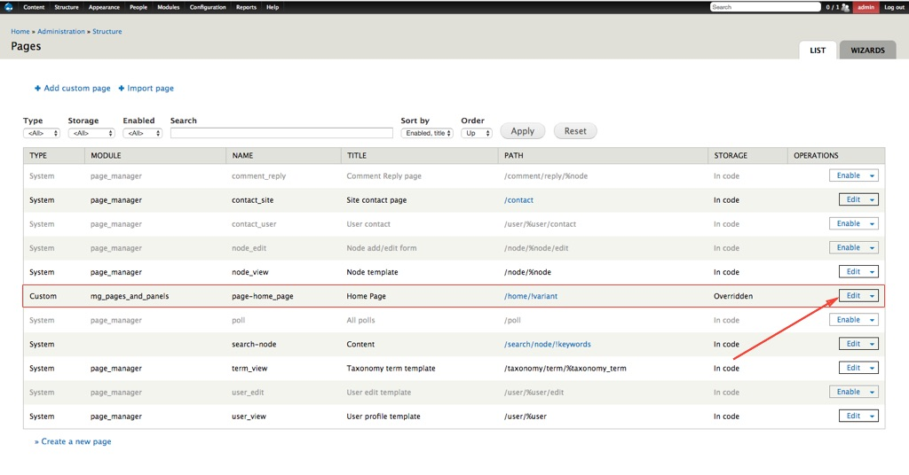
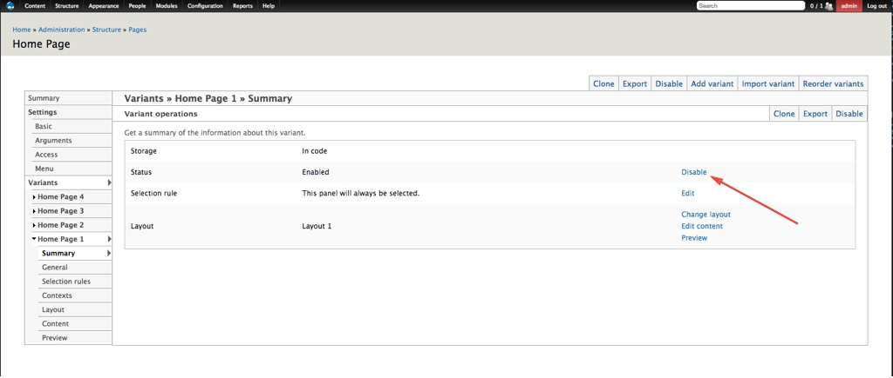

Front Page
Saturday, March 18, 2017 4:19 AMTheMAG contains four predefined variants of front page.
If you wish to use some of the them, perform the following steps:
Step 1: Go to Structure > Pages. Step 2: Click on Edit to make changes.

Home Page 1 is a default variant of the front page. In order to change it and use another variant, for example Home Page 2, perform the following steps:
Step 1: Click the Home Page 2 tab from the left side and choose Selection rules.
Step 2: Click the Remove button in order to remove the “String: comparison” rule. This rule is created only for the purposes of the demo content.

Step 3: Click the Update and Save button.
Step 4: Now click the Home Page 1 tab from the left side and choose Summary. What we should do is disable the (Home Page 1) default variant because at the same time there cannot be several active variants of the front page.
Step 5: Click Disable to disable this option.

Step 6: Click the Disable and Save button.